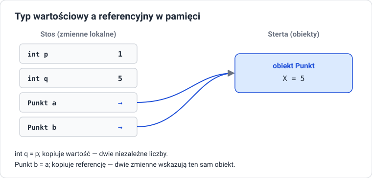

Typy, zmienne, operatory, wejście i wyjście
Cel lekcji
Po tej lekcji będziesz umieć zadeklarować zmienną i stałą, dobrać typ do przechowywanej wartości, rozróżnić typy stałoprzecinkowe i zmiennoprzecinkowe oraz wartościowe i referencyjne, stosować operatory zgodnie z ich priorytetem, zamieniać typy między sobą i bezpiecznie wczytywać dane od użytkownika.
Zmienne i stałe
Zmienna to nazwane miejsce w pamięci, które przechowuje wartość określonego typu. Typ podajemy przy deklaracji i nie można go później zmienić.
int liczbaUczniow; // deklaracja
liczbaUczniow = 28; // przypisanie
int liczbaKlas = 4; // deklaracja z inicjalizacją
int a = 1, b = 2, c = 3; // kilka zmiennych jednego typu
Zmiennej lokalnej nie wolno odczytać, zanim nada się jej wartość — kompilator zgłosi błąd CS0165.
var — typ ustalany przez kompilator
var nie oznacza „dowolnego typu”. Kompilator odczytuje typ z wartości po prawej stronie i od tej chwili zmienna ma ten typ na stałe. var wymaga inicjalizacji: var x; to błąd.
Stałe
Wartość stałej jest znana w czasie kompilacji i nie da się jej zmienić. Stałe zastępują „magiczne liczby” w kodzie: cena * StawkaVat mówi więcej niż cena * 0.23.
Typy proste
Typy całkowite (stałoprzecinkowe)
| Typ | Rozmiar | Zakres | Przykład |
|---|---|---|---|
byte |
8 bitów | 0 … 255 | wartość składowej koloru |
short |
16 bitów | −32 768 … 32 767 | |
int |
32 bity | ok. −2,1 mld … 2,1 mld | domyślny wybór: liczniki, punkty, wiek |
long |
64 bity | ok. ±9,2 · 10¹⁸ | liczba ludności świata, czas w milisekundach |
Istnieją też wersje bez znaku: ushort, uint, ulong, oraz sbyte. Zakres sprawdzisz w programie: int.MinValue, int.MaxValue.
Typy zmiennoprzecinkowe
| Typ | Rozmiar | Dokładność | Przyrostek | Zastosowanie |
|---|---|---|---|---|
float |
32 bity | ok. 7 cyfr | f → 3.14f |
grafika, gry |
double |
64 bity | ok. 15–16 cyfr | brak → 3.14 |
domyślny wybór: obliczenia, pomiary |
decimal |
128 bitów | 28–29 cyfr dziesiętnych | m → 19.99m |
pieniądze |
float i double przechowują liczby w systemie dwójkowym, więc wielu ułamków dziesiętnych nie zapiszą dokładnie. 0.1 + 0.2 to w double nie dokładnie 0.3. decimal liczy w systemie dziesiętnym — dlatego używa się go do kwot.
double d = 0.1 + 0.2;
decimal m = 0.1m + 0.2m;
Console.WriteLine(d == 0.3); // porównanie liczb zmiennoprzecinkowych bywa zawodne
Console.WriteLine(m == 0.3m);
Liczby double porównujemy z tolerancją: Math.Abs(d - 0.3) < 1e-9.
Pozostałe typy proste
| Typ | Wartości | Przykład |
|---|---|---|
bool |
true, false |
bool zdane = punkty >= 50; |
char |
jeden znak Unicode, w apostrofach | char ocena = 'A';, char nowaLinia = '\n'; |
string |
tekst, w cudzysłowach | string imie = "Ada"; |
char to w rzeczywistości liczba — kod znaku w Unicode. Dlatego 'A' + 1 daje liczbę 66, a (char)66 daje 'B'.
Literały liczbowe
int milion = 1_000_000; // podkreślenia dla czytelności
int hex = 0xFF; // szesnastkowo: 255
int bin = 0b1010; // dwójkowo: 10
double maly = 1.5e-3; // notacja wykładnicza: 0.0015
long duzy = 5_000_000_000L;
Typy wartościowe i referencyjne

| Typy wartościowe | Typy referencyjne | |
|---|---|---|
| przykłady | int, double, bool, char, decimal, struct, enum |
string, tablice, List<T>, klasy |
| zmienna zawiera | samą wartość | referencję (adres) do obiektu |
przypisanie b = a |
kopiuje wartość | kopiuje referencję — obie zmienne wskazują ten sam obiekt |
wartość null |
niedozwolona (chyba że typ int?) |
dozwolona: „brak obiektu” |
string jest typem referencyjnym, ale niezmiennym (immutable): każda „zmiana” tekstu tworzy nowy obiekt. Dlatego a.ToUpper() nie zmienia a — zwraca nowy tekst, który trzeba zapisać: a = a.ToUpper();.
Operatory
Arytmetyczne
| Operator | Działanie | Przykład | Wynik |
|---|---|---|---|
+ - * |
dodawanie, odejmowanie, mnożenie | 7 * 3 |
21 |
/ |
dzielenie | 7 / 2 · 7.0 / 2 |
3 · 3.5 |
% |
reszta z dzielenia | 7 % 3 |
1 |
++ -- |
zwiększenie / zmniejszenie o 1 | x++ |
Dzielenie całkowite. Jeśli oba argumenty / są całkowite, wynik też jest całkowity — część ułamkowa jest odcinana (zaokrąglenie w stronę zera). Wystarczy, że jeden argument jest double, żeby wynik był double.
Reszta z dzielenia ma znak dzielnej: -7 % 3 daje wynik ujemny. Sprawdzanie parzystości: x % 2 == 0.
Przed czy po. x++ zwraca starą wartość i zwiększa, ++x zwiększa i zwraca nową:
Przypisania
=, +=, -=, *=, /=, %= — suma += x to krótszy zapis suma = suma + x.
Porównania i logiczne
| Operator | Znaczenie |
|---|---|
== != |
równe, różne |
< > <= >= |
mniejsze, większe … |
&& |
i (oba warunki prawdziwe) |
|| |
lub (co najmniej jeden prawdziwy) |
! |
nie |
&& i || sprawdzają drugi warunek tylko wtedy, gdy to potrzebne (obliczanie skrócone).
Bitowe
Działają na pojedynczych bitach liczb całkowitych.
| Operator | Działanie | Przykład (dwójkowo) | Wynik |
|---|---|---|---|
& |
AND | 0b1100 & 0b1010 |
0b1000 = 8 |
| |
OR | 0b1100 | 0b1010 |
0b1110 = 14 |
^ |
XOR | 0b1100 ^ 0b1010 |
0b0110 = 6 |
~ |
negacja bitów | ~0 |
-1 |
<< >> |
przesunięcie w lewo / w prawo | 1 << 3 · 16 >> 2 |
8 · 4 |
Przesunięcie w lewo o n bitów mnoży przez 2ⁿ, w prawo — dzieli. Operatory bitowe przydają się np. przy maskach podsieci i flagach uprawnień.
Łańcuchowe
+ skleja teksty. Jeśli choć jeden argument jest tekstem, drugi zostanie zamieniony na tekst. Operacje wykonują się od lewej do prawej, więc kolejność ma znaczenie:
Console.WriteLine("Wynik: " + 2 + 3); // sklejanie od lewej
Console.WriteLine(2 + 3 + " punktów"); // najpierw dodawanie liczb
Warunkowy i null
string opis = punkty >= 50 ? "zaliczone" : "niezaliczone";
string tekst = Console.ReadLine() ?? ""; // jeśli null, użyj ""
Priorytet operatorów
Od najwyższego:
x++,x--, wywołania metod, dostęp przez kropkę!,~,++x,--x, rzutowanie(int)*,/,%+,-<<,>><,>,<=,>===,!=&, potem^, potem|&&, potem||??, potem?:- przypisania
=,+=…
Gdy masz wątpliwość — użyj nawiasów. Czytelność jest ważniejsza niż oszczędność znaków.
Konwersje typów
| Rodzaj | Kiedy | Przykład |
|---|---|---|
| niejawna | bez ryzyka utraty danych | int i = 5; double d = i; |
| jawna (rzutowanie) | może stracić dane — trzeba ją zapisać | double d = 9.99; int i = (int)d; → 9 |
metody Parse, TryParse |
tekst → liczba | int.Parse("42") |
ToString() |
dowolny typ → tekst | 42.ToString() |
klasa Convert |
między typami podstawowymi | Convert.ToInt32(9.6) → 10 (zaokrągla) |
Rzutowanie (int) odcina część ułamkową, a Convert.ToInt32 i Math.Round zaokrąglają.
Przepełnienie
Po przekroczeniu zakresu int wartość domyślnie „przekręca się” na drugi koniec zakresu, bez komunikatu. W bloku checked środowisko zgłosi wyjątek OverflowException:
Wczytywanie danych od użytkownika
Console.ReadLine() zawsze zwraca tekst. Zamiana tekstu na liczbę to parsowanie.
| Sposób | Zwraca | Gdy tekst nie jest liczbą |
|---|---|---|
int.Parse(tekst) |
int |
wyjątek FormatException, program się przerywa |
int.TryParse(tekst, out int x) |
bool + liczba przez out |
zwraca false, program działa dalej |
Dane od użytkownika są niezaufane: mogą zawierać litery, spacje, przecinek zamiast kropki albo nic. Dlatego używamy TryParse i sprawdzamy wynik:
Console.Write("Podaj liczbę uczniów: ");
string tekst = Console.ReadLine() ?? "";
if (int.TryParse(tekst, out int liczba) && liczba > 0)
{
Console.WriteLine($"Każdy dostanie {120 / liczba} cukierków.");
}
else
{
Console.WriteLine("To nie jest poprawna liczba uczniów.");
}
Liczby z ułamkiem i separator dziesiętny
double.TryParse korzysta z ustawień regionalnych komputera: na polskim systemie oczekuje przecinka (72,5), na angielskim kropki (72.5). Żeby zawsze przyjmować kropkę:
using System.Globalization;
bool poprawne = double.TryParse(
tekst,
NumberStyles.Float,
CultureInfo.InvariantCulture,
out double masa
);
Formatowanie wyniku
double bmi = 22.2222;
decimal cena = 1234.5m;
Console.WriteLine($"{bmi:F2}"); // 2 miejsca po przecinku
Console.WriteLine($"{cena:N2}"); // separator tysięcy: 1 234,50
Console.WriteLine($"{cena:C}"); // waluta wg ustawień systemu
Console.WriteLine($"{0.237:P1}"); // procent: 23,7%
Console.WriteLine($"{7:D3}"); // zera wiodące: 007
Console.WriteLine($"|{"ab",6}|{"cd",-6}|"); // wyrównanie do prawej i lewej
Przydatne klasy: Math i string
Console.WriteLine(Math.Abs(-5)); // 5
Console.WriteLine(Math.Pow(2, 10)); // 1024
Console.WriteLine(Math.Sqrt(16)); // 4
Console.WriteLine(Math.Round(2.567, 2)); // 2,57 (separator zależy od ustawień systemu)
Console.WriteLine(Math.Max(3, 8)); // 8
Console.WriteLine(Math.PI); // 3,141592653589793
string s = " Programowanie ";
Console.WriteLine(s.Trim()); // "Programowanie" — bez spacji na brzegach
Console.WriteLine(s.ToUpper()); // wielkie litery
Console.WriteLine(s.Length); // 17 — liczba znaków razem ze spacjami
Console.WriteLine(s.Contains("gram")); // True
Console.WriteLine(s.Replace("a", "@")); // zamiana każdego "a" na "@"
Console.WriteLine(s.Substring(2, 7)); // "Program" — od indeksu 2, długość 7
Console.WriteLine(s[2]); // P — znak na pozycji 2 (typ char)
Console.WriteLine(string.IsNullOrWhiteSpace(s)); // False — tekst nie jest pusty
Zadania
Zadanie 1: Dobierz typ
Dobierz typ i nazwę zmiennej do każdej wartości: liczba mieszkańców Krakowa, cena biletu, temperatura z dokładnością do 0,1°, informacja, czy uczeń jest pełnoletni, pierwsza litera nazwiska, liczba gwiazd w Drodze Mlecznej (ok. 100–400 mld), adres e-mail. Uzasadnij wybory.
Zadanie 2: Przewiduj, potem testuj
Zapisz przewidywane wyniki, a potem sprawdź w programie: 17 / 5, 17 % 5, 17 / 5.0, (double)17 / 5, (double)(17 / 5), "17" + 5, 17 + 5 + "x", 'A' + 2, (char)('A' + 2), 1 << 4, 12 & 10, 12 | 10.
Zadanie 3: Kalkulator BMI
Program pobiera masę w kilogramach i wzrost w centymetrach (z kropką jako separatorem), sprawdza, czy oba wejścia są liczbami większymi od zera, oblicza BMI = masa / (wzrost w metrach)² i wypisuje wynik z dwoma miejscami po przecinku. Używaj fikcyjnych danych. Testy: 80 i 200; 72 i 180; kot i 180; 72 i 0; -10 i 180; puste i 180; 72,5 i 180.
Zadanie 4: Faktura
Program wczytuje nazwę produktu, cenę netto (decimal) i liczbę sztuk (int), a następnie wypisuje tabelkę: netto, VAT 23%, brutto — wyrównaną do prawej, z dwoma miejscami po przecinku. Stawkę VAT zapisz jako stałą.
Zadanie 5: Sekundy
Program wczytuje liczbę sekund i wypisuje ją w formacie godziny:minuty:sekundy z zerami wiodącymi, np. 3725 → 01:02:05. Użyj dzielenia całkowitego, reszty i formatu D2.
Zadanie 6: Bity
Program wczytuje liczbę od 0 do 255 i wypisuje: jej zapis dwójkowy (Convert.ToString(liczba, 2)), czy jest parzysta (sprawdź operatorem &, nie %), wynik przesunięcia o 1 bit w lewo i w prawo.
Zadanie 7: Przepełnienie
Napisz program liczący silnię liczb od 1 do 25 w zmiennej int, a potem w long. Od której liczby wyniki są błędne w każdym typie? Jak wykryć przepełnienie blokiem checked?